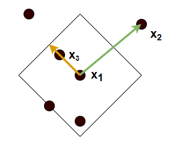

Wykrywanie anomalii - definicje#
Drzewa izolujące#
Zdefiniujmy drzewo izolujące.
Definicja
Niech \(X = \{x_{1},x_{2},..,x_{n}\}\) będzie zbiorem d wymiarowych punktów i niech \(X' \subset X\). Drzewo izolacji będzie zdefiniowane przez następujące własności.
Dla każdego węzła \(T\) w drzewie, T jest zewnętrznym węzłem (liściem) bez dzieci albo wewnętrznym węzłem z dokładnie dwoma węzłami potomnymi \(T_{l}\) i \(T_{r}\) oraz dokładnie jednym testem
Test składa się z atrybutu \(q\) i wartość podziału \(p\), takiej że test \(q<p\) dzieli punkty na \(T_{l}\) i \(T_{r}\)
Mając naszą próbkę danych \(X\) dzielimy ją rekurencyjnie losowo wybierając atrybut \(q\) i wartość podziału \(p\) dopóki nie zajdzie jedno z natępujących:
węzeł będzie miał tylko jeden element
wszystkie elementy w węźle będą miały taką samą wartość
Przy uczeniu poszczególnych drzew w lesie stosujemy próbkowanie, uczymy drzewo na losowo wybranym podzbiorze danych.
Do oznaczenia, które elementy zbioru są anomaliami potrzebujemy jeszcze miary odstawania. Dla lasu izolacji, którego pojedncze drzewo ma głębokość \(n\), wyraża ona się w poniższy sposób dla punktu \(x\). \( \large s(x, n) = 2^{-\frac{E(h(x))}{c(n)}} \)
Wyjasnijmy co oznaczaja poszczególne elementy równania. \(E(h(x))\) to wartość oczekiwana długości ścieżki od korzenia drzewa do końcowego węzła drzewa zawierającego punkt \(x\). Wartość c(n) wywodzi się z teorii binarnych drzew poszukiwań i oznaczan przeciętną długość sciezki dla danego n. Wzór na c(n) to :
gdzie \(H(i)\approx log(i) + 0.5772\). Wiedząć że niskie h(x) sugeruje, że mozemy miec do czynienia z anomalią gdyż elementy odstające są łatwiejsze do wyizolowania niż normalne, możemy wywnioskować :
jeżeli przypadki zwracają wartości s zbliżone do 1 możemy je uznać za anomalie
jeżeli wartości są wyraźnie mniejsze od 0.5 wtedy własciwym jest uznanie ich za normalne elementy
jeżeli wartości dla wszystkich przypadków są zbliżone do 0.5, wtedy nie mamy do czynienia z elementami odstającymi w badanym zbiorze
Local Outlier Factor#
W celu zrozumienia jak działa Local Outlier Factor wprowadzimy kilka definicji.
Pierwszą z nich jest definicja k-dystansu. K-dystans to dystans między objektem, a jego k-tym najbliższym sąsiadem.
Definicja
Dla każdej liczby \(k \in \mathbb{Z}_{+}\), zbioru \(X\), definiujemy k-dystans miedzy elementem \(x_{1}\) i \(x_{2}\), gdzie \(x_{1}, x_{2} \in X\) jako dystans \(N_{k}(x_{1})=d(x_{1},x_{2})\), spełniający warunki
Dla co najmniej k takich objektów \(x'\), że \(x' \in X-\{x_{1}\}\) zachodzi \(d(x_{1}, x') \leq d(x_{1}, x_{2})\)
Dla co najwyżej k-1 takich objektów \(x'\), że \(x' \in X-\{x_{1}\}\) zachodzi \(d(x_{1}, x') < d(x_{1}, x_{2})\)
Obiekty które odległość od badanego obiektu \(x_{1}\) jest niewiększa od zdefiniowanego tutaj k-dystansu nazywamy k najblizszym sąsiadami \(x_{1}\) i oznaczamy \(NN_{k}(x_{1})\). Z tym pojeciem jest powiązana kolejna koncepcja użyteczna w algorytmie LOF, koncepcja dystans osiągalności. Dla obiektów nie należących do k najbliższych sąsiadów obiektu do którego chcemy wyznaczyc dystans, dystans odległości będzie tożsamy z dystansem wedle obranej przez nas metryki. Natomiast dla obiektów należacych do k-sasiedztwa \(x_{1}\) odległość będzie równa k-dystansowi w punkcie \(x_{1}\) czyli \(N_{k}(x_{1})\). Zatem dystans osiągalności \(x' \in {X}\) względem \(x_{1}\), to
Celem wprowadzenia tego dystansu jest zwiekszenie stabilnosci algorytmu i ograniczenie statystycznych fluktuacji \(d(x_{1}, x_{2}))\)

Na rysunku widzimy działanie dystansu osiągalności gdy za dystans przyjmiemy dystans manhattan, dla k = 4. Czarną ciągłą linią zaznaczono \(N_{k}(x_{1})\) Na pomarańczowo zaznaczona jest odległość osiągalności punktu \(x_{3}\) względem \(x_{1}\), a na zielono odległość punktu \(x_{2}\) względem \(x_{1}\)
Kolejnym waznym terminem jest gęstość lokalnej osiągalności (ang. Local reachability denstity (LRD)), która wskazuje na to jaka jest gęstość elementów w otoczeniu badanego elementu. Małe wartości oznaczają tutaj że obiekt jest daleki innym najbliższym punktom. LRD wyraża się wzorem:
Z powyższego wynika że zdefiniowany przez nas dystans osiągalniości nie spełnia warunku symetryczności i nie może zadawać metryki w przestrzeni. Nie mniej jednak jest użyteczy dla algorytmu LOF. Przejdźmy więc do dalszej części jego omawiania.
Porównując wartości LRD dla badanego punktu i najbliższych mu punktów może wykryć wartości odstające, które będą charaktryzowały sie mniejszymi wartościami gęstości lokalnej osiągalności. Możemy więc wyrazić Local Outlier Factor (LOF):
Definicja
Local Outlier Factor dla punktu \(x_{0}\) i ilości najblizszych sąsiadów k wyraża się wzorem
Wartości LOF zbliżone do 1 lub od neigo mniejsze świadczą że badany element nie jest anomalią, odwrotnie jeśli wartości LOF są większe niż 1, wtedy możemy sądzic że badany przez nas element rzeczywiście jest anonalią. Sprawdźmy teraz działanie algorytmu w praktyce, korzystając z biblioteki pyod i używnaych już przez nas wcześniej danych.